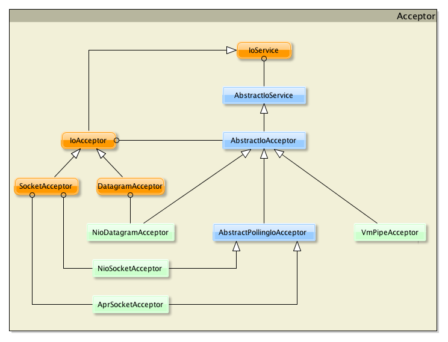

IoService Details
IoService 是一个接口，它被 MINA 中最重要的两个类实现：
- IoAcceptor
- IoConnector
要构建一个服务器，你需要选择一个 IoAcceptor 接口的实现。对于客户端应用，你需要选择一个 IoConnector 接口的实现。
IoAcceptor
根本上讲，IoAcceptor 接口是因为 accept() 方法的缘故所命名，这个方法负责客户端和服务器端连接的创建。服务器端接收连入的连接请求。
某些情况下，我们可以把这一接口命名为 "Server" (将来的 MINA 3.0 中确实这样命名)。
因为我们可能要应对不止一种类型的传输协议 (TCP/UDP/...)，我们为这一接口提供了多个实现。不太可能需要你再实现一个新的。
我们具有以下具体实现类：
- NioSocketAcceptor：非阻塞套接字传输 IoAcceptor
- NioDatagramAcceptor：非阻塞 UDP 传输 IoAcceptor
- AprSocketAcceptor：基于 APR 的阻塞套接字传输 IoAcceptor
- VmPipeSocketAcceptor：in-VM IoAcceptor
你只需挑选一个适合你需要的。
这里是 IoAcceptor 接口和类的类图：

IoConnector
我们需要为客户端实现 IoConnector。我们提供了以下具体实现类：
- NioSocketConnector：非阻塞套接字传输 IoConnector
- NioDatagramConnector：非阻塞 UDP 传输 IoConnector
- AprSocketConnector：基于 APR 的阻塞套接字传输 IoConnector
- ProxyConnector：一个提供代理支持的 IoConnector
- SerialConnector：一个用于串行传输的 IoConnector
- VmPipeConnector：in-VM IoConnector
你只需挑选一个适合你需要的。
这里是 IoConnector 接口和类的类图：